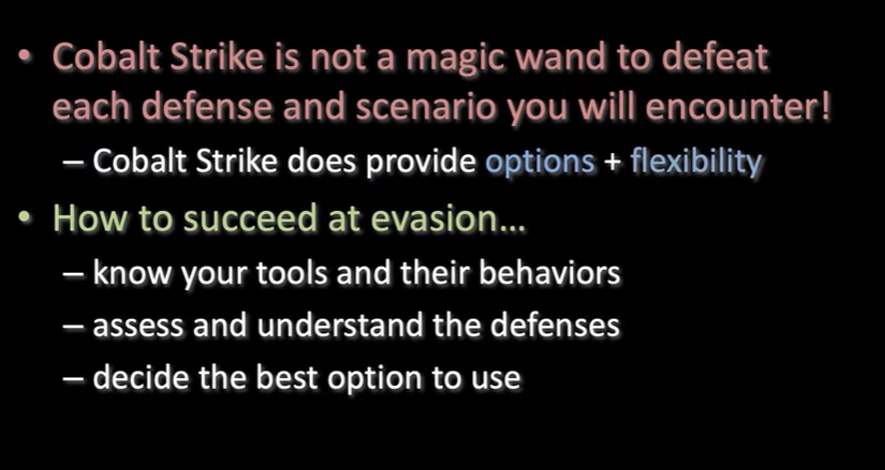

the goal is to know what the optionsare and how I anticipate to use these options
different defense products use differnet ways of analyses. its nice that you know all the environments fso fucking well LMAO
===============================================================
Operations
===============================================================
- Best Practices
- Logging and Reporting
- Team Roles
- Malleable C2 profile ~ this means a profile which has been modified exactly the way you are comfotable in
startup arguments- > ./teamserver <host> <password> [/path/to/c2.profile] [YYYY-MM-DD]

------------------------------------------------------------------------------------------------
Connect to another teamserver

Your servers are in the bottom left

------------------------------------------------------------------------------------------------
Best Practices - Team Servers
Have 3 servers as lifelines
- Have an inital access server(staging server)
- recieves first callbacks (very high risk of being found)
- Long Haul Server- server with different indicators [potentially differnt tools]
- this is a lifeline to get back into the network -- PLAN FOR THIS!
- Post-Exploitation Server- operate post exploit out of

- --------------------------------------------------------------------------------------------------------------------------------------------------------------------------------------------------------

- --------------------------------------------------------------------------------------------------------------------------------------------------------------------------------------------------------

- --------------------------------------------------------------------------------------------------------------------------------------------------------------------------------------------------------
- Reporting